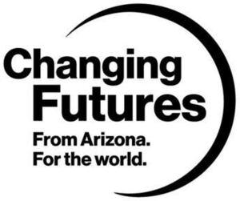

Trade Mark Journal No.2025/048 28 November 2025
WO0000001886303 (36)
Office of origin: United States of America
Date of International Registration:22 September 2025
Date of designation in the UK:
22 September 2025

The mark consists of The words Changing Futures From Arizona. For the world. positioned in a stacked form and surrounded on the right side by a crescent moon shape. The word Changing appears on the top line, with the "F" in Futures directly underneath the "h" in Changing; From Arizona. appears in smaller font directly underneath Futures, and For the World. appears in the same sized font underneath From Arizona.
International priority date claimed: 22 August 2025
(United States of America)
(99352444)
- Class 36
- Charitable fund raising; philanthropy consultation relating to charitable fundraising; charitable fundraising to support student success, scholarships, costs of higher education, education programs, environmental sustainability programs and initiatives, research, community leadership and development, and healthcare research and innovation; charitable fundraising services to cover the costs of higher education.
Arizona State University Foundation for A New American University
Representative: Sean D. Garrison Bacal & Garrison Law Group, 6991 East Camelback Road, Suite D-102, Scottsdale AZ 85251, UNITED STATES OF AMERICA